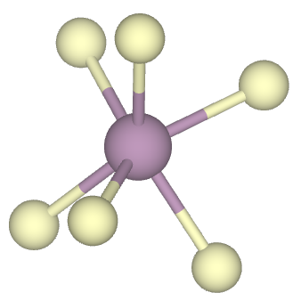

Structure Generation using VESTA
Steps to Follow
- Open the QECalcs folder.
- Open the bt1_vesta folder.
- Locate the MoS₂.cif file.
- (Alternatively, download the CIF file of MoS₂ from Materials Project.)
- Launch VESTA.
- Open the MoS₂.cif file.
- File → Open, or simply drag and drop the file into VESTA.
- Explore the structure by trying:
- Rotate, zoom, and pan the structure.
- Display atoms, bonds, and polyhedra.
- Generate a supercell.
- Measure bond lengths and bond angles.
- View the unit cell and crystal axes.
